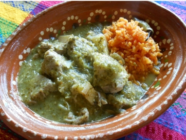

RECETA " CARNE DE PUERCO EN SALSA VERDE"
INGREDIENTES
- Carne de puerco
- Tomates
- Cebolla
- Ajo
- Chiles
- Papas
UTENCILIOS
- Licuadora
- Sarten
- Cuchillo
- Tabla para picar
- Espatula

PASOS
1.-Ponemos a cocer las papas por unos minutos, cuando sientas que estan blandas las retiras
2.-Cortas las papas en cuadritos
3.-Cortamos la carne de puerco en trozos pequeños
4.-Ponemos a cocer los tomates y chiles
5.-Retiramos los tomates y chiles, los colocamos en la licuadora, agregamos tambien la cebolla,ajo,sazonador, una taza de agua y sal al gusto
6.-Fries la carne de puerco, las retiras y pones a eacurrir el aceite
7.-Fries las papas y al terminar agregas la carne
8.-Viertes las salsa y dejas hervir por unos minutos
¡DISFRUTA!
